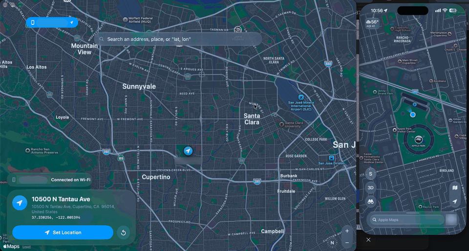

Change your iPhone's location instantly
changemylocation sets a GPS location on your iPhone from a Mac or Windows PC. It's free, no jailbreak needed, and the iPhone keeps the location after you unplug it.

Features
Anywhere in the world
Search an address or place, click the map, or paste coordinates.
Stays set after you unplug
The iPhone runs the location itself, so you can unplug it, lock it, and take it off Wi-Fi.
No jailbreak
Nothing to install on the iPhone. It uses Apple's own developer location feature.
Cable or Wi-Fi
Set the location over a USB cable or on the same Wi-Fi network, on several iPhones at once.
Mac and Windows
A Mac app and a Windows app (beta) that both update themselves.
Free and open source
MIT licensed, so you can read exactly what it does.
How to change your iPhone's location
- Download changemylocation for Mac or Windows. On Windows, install Apple Devices from the Microsoft Store first.
- Plug in your iPhone, unlock it and tap Trust. Turn on Developer Mode in Settings › Privacy & Security. If it isn't there, keep the iPhone plugged in with changemylocation open and the app makes it appear.
- Search for a place or click the map, then press Set Location. Press Reset, or restart the iPhone, to get your real location back.
Full install steps are in the README on GitHub.
Requirements
| Mac | Windows (beta) | |
|---|---|---|
| Computer | macOS 26 or later | Windows 10 or 11 |
| Extra software | None | Apple Devices from the Microsoft Store, or iTunes |
| iPhone | iOS 17 or later, Developer Mode on | iOS 17 or later, Developer Mode on |
FAQ
Do I need to jailbreak my iPhone?
No. changemylocation uses Apple's developer location simulation, the same feature Xcode uses.
Does the iPhone have to stay connected to the computer?
No. Once the location is set, the iPhone holds it by itself. In testing it held for over 9 hours with the Mac asleep and the iPhone locked on battery.
Which iOS versions work?
iOS 17 and later, including iOS 18, 26 and 27.
How do I get my real location back?
Press Reset with the iPhone connected by cable or on the same Wi-Fi, or restart the iPhone.
Why does an app still show the old location?
Some apps keep the last location they received, so close the app fully and reopen it. A few apps deliberately ignore simulated locations.
Do I need Xcode?
No. changemylocation talks to the iPhone directly, so you don't need Xcode or any other developer software.
Is it free?
Yes, completely free and open source under the MIT license, with no ads, accounts or subscriptions.
Responsible use
changemylocation is meant for developing and testing apps on devices you own. Respect the terms of the apps and services you use, many of which forbid location spoofing, and don't use it to mislead people who rely on your location.